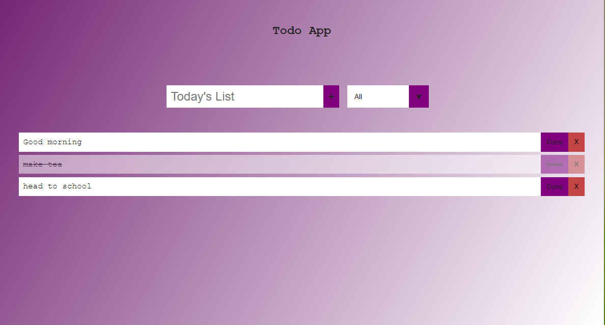

SULEIMAN Abubabkar Sadeeq
Suleiman Abubakar Sadeeq, a self taught front end developer powered by ambition and drive for this career path. well discipline and structured, with a keen eye for details, very passionate and always ready to learn new things. created a couple of projects learning technologies like html, css and javaScript. conversant with mobile responsive designs and modern implementations.

A practice project i made using vanilla javaScript, html and css.
it is a todoApp with a complete CRUD functionality. a basic design
pattern designed for only computer and larger screen
Suleiman Abubakar Sadeeq, a self taught front end developer
powered by ambition and drive for this career path. well
discipline and structured, with a keen eye for details, very
passionate and always ready to learn new techs.
html/css
javaScript
bootstrap
react
git
QUALITIES
- Keen eye for small details
- Ready to learn
- Conversant with modern web technology
- Good communication skills